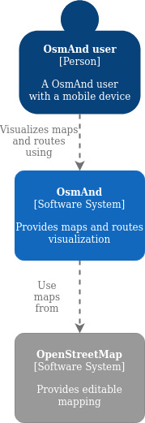
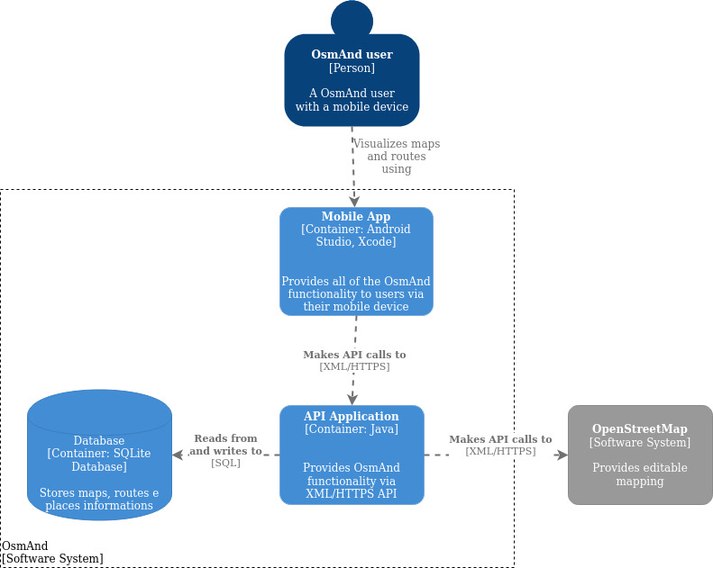
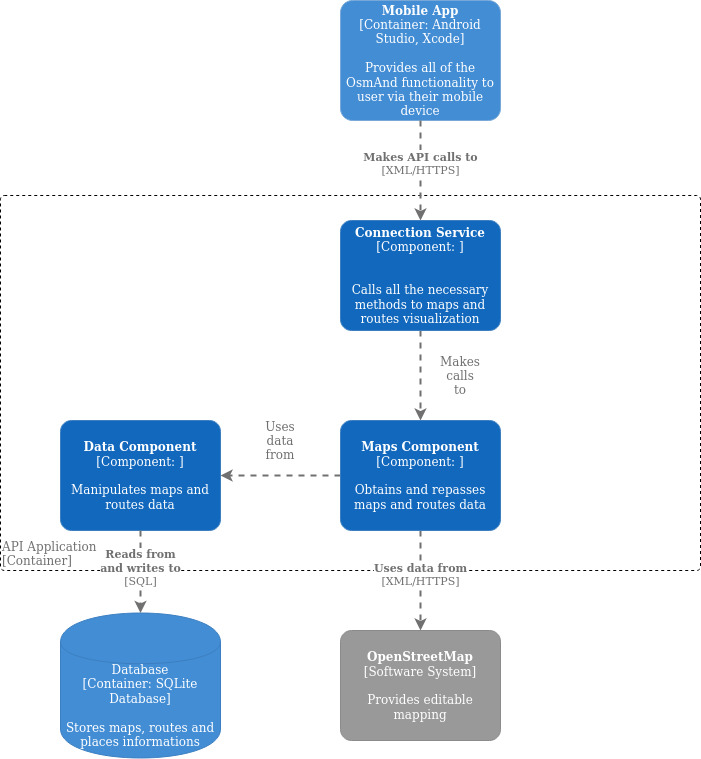

Documentação arquitetural para o OsmAnd
Este documento descreve parte da arquitetura do OsmAnd
Autores
Este documento foi produzido por Débora Ferreira de Barros.
- Matrícula: 116211210
- Contato: debora.barros@ccc.ufcg.edu.br
- Projeto documentado: https://github.com/osmandapp/OsmAnd
Descrição Arquitetural – Mapas e rotas de navegação do OsmAnd
Este documento descreve parte da arquitetura do projeto OsmAnd. Essa descrição foi baseada principalmente no modelo C4.
É importante destacar não será descrita toda a arquitetura do OsmAnd. O foco é a descrição do serviço que fornece mapas e rotas de navegação do OsmAnd, que é parte fundamental do projeto.
Descrição Geral sobre o Osmand
OsmAnd (OSM Automated Navigation Directions) é um projeto que tem como objetivo permitir a visualização de mapas bem como oferecer rotas de navegação para carros, bicicletas, transportes públicos e pedestres a partir do uso de dispositivos móveis de forma online e offline. Mais detalhes sobre o projeto podem ser vistos neste link.
O Serviço de mapas de navegação do OsmAnd
Objetivo Geral
Implementar um serviço que oferece mapas e rotas de navegação disponíveis para diversos tipos de transporte e para pedestres.
Objetivos Específicos
Utilizando-se de um serviço de mapeamento é desejado criar rotas de navegação que guiem os usuários pelo mapa para o destino escolhido a partir de sua localização atual e disponibilizar mapas que funcionem de forma online e offline.
Contexto
A partir de um dispositivo móvel o usuário do OsmAnd consegue visualizar mapas de lugares específicos e traçar rotas de navegação. O OsmAnd por sua vez se utiliza do mapeamento de lugares feitos pelo OpenStreetMap, que é um projeto colaborativo que cria mapas livres e editáveis do mundo com dados abertos, para fornecer a visualização de mapas e rotas.

Containers
O meio de acesso ao OsmAnd é feito exclusivamente a partir de um aplicativo móvel que acessa todas as suas funcionalidades. O aplicativo móvel se utiliza de uma API que faz chamadas XML/HTTPS para a API da aplicação que por sua vez faz uso dos dados dos mapas oferecidos pelo OpenStreetMap utilizando-se de chamadas de API XML/HTTPS. Todas as informações necessárias são armazenadas em um banco de dados SQLite.

Componentes
O Connection Service tem todos os métodos necessários para fazer a comunicação entre os os dados armazenados e a aplicação. Para isso ele faz chamadas ao Maps Component que por sua vez é o responsável por requisitar dados, estes que são obtidos no OpenStreetMap ou que são passadas pelo Data Component. O Data Component é responsável por manipular o armazenamento, exclusão e modificação de todos os dados no banco de dados da aplicação. Em sua maioria as informações manipuladas são do tipo XML e seguem protocolos do tipo HTTPS.

Visão de Informação
Os principais dados manipulados, armazenados, distribuídos e coletados são arquivos do tipo GPX que usam um esquema XML para transferir dados GPS entre aplicações. Eles são usados para descrever rotas, trilhas ou pontos de passagem em mapas.

Contribuições Concretas
Adicionando diagramas: Enviado para análise
Link do Pull Request.